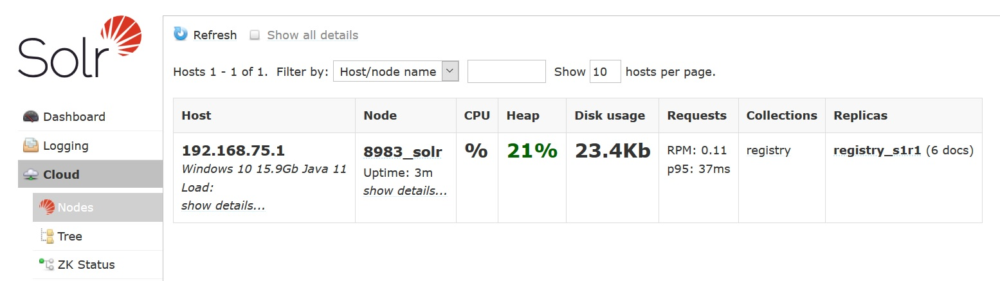

Apache Solr - Quick Start
Overview
PDS Registry requires Apache Solr. Solr has to be installed and started in cloud mode before running PDS Registry. PDS Registry has been tested with Solr version 8.4.1.
Solr can run in two modes:
- SolrCloud - this is the only mode supported by the PDS EN Registry tools. You can learn more about SolrCloud in this section.
- Standalone (legacy mode) - this is the default mode. Make sure you don't start Solr in this mode by mistake.
Installation
To install Apache Solr on a developer laptop follow instructions below. For production deployment, see this section.
Step 1: Download and extract Solr ZIP or TGZ archive
Download Solr 8.4.1 ZIP or TGZ from apache archive.
Extract the archive to any directory, for example, /opt/8.4.1. We will call this directory SOLR_HOME throughout the rest of this documentation.
Step 2: Start Solr in cloud mode
Go to SOLR_HOME/bin and run solr.cmd on Windows or solr on Unix or Mac. Pass start and -cloud parameters to start Solr in cloud mode.
# Mac ./solr start -cloud # Windows solr.cmd start -cloud
Step 3: Check that Solr server started in cloud mode
Option 1: Solr Admin UI
Open a web browser and go to http://localhost:8983/solr/ or http://127.0.0.1:8983/solr/. You should see a page similar to this.

Check that Cloud menu item is available on the left. Click it. You should see a page similar to this.

Option 2: Command-line
Go to SOLR_HOME/bin and run following command
# Mac ./solr status # Windows solr.cmd status
You should get a message similar to this
Found 1 Solr nodes:
Solr process 55672 running on port 8983
{
"solr_home":"/opt/solr-8.4.1/server/solr",
"version":"8.4.1 832bf13dd9187095831caf69783179d41059d013 - ishan - 2020-01-10 13:40:28",
"startTime":"2020-04-11T01:48:15.071Z",
"uptime":"0 days, 0 hours, 2 minutes, 23 seconds",
"memory":"91.7 MB (%17.9) of 512 MB",
"cloud":{
"ZooKeeper":"localhost:9983",
"liveNodes":"1",
"collections":"0"}}
Using Docker
You can run Solr in Docker or Podman.
- Use the official Solr image from DockerHub (solr:8.4).
- Map both ZooKeeper (9983) and Solr (8983) ports. You would need access to ZooKeeper to upload PDS registry collection configset.
- Do not forget to pass -cloud parameter to start Solr in cloud mode.
The following example is for CentOS 8 / RHEL 8 which has Podman in the AppStream (standard repo). If your system has Docker, use docker command with the same parameters.
podman run -p 8983:8983 -p 9983:9983 -d --name solr -t solr:8.4 -cloud
Next Steps
Your Solr server is ready. You should now deploy the tools to harvest metadata and manage your registry.
Common Errors
If you could not start Solr or access the Admin UI
- Check logs in SOLR_HOME/server/logs directory.
- If running in a VM or container, make sure that port 8983 is open or mapped.
- Try replacing localhost with the hostname / IP of your machine.
- Check if another application is using port 8983. Make sure you don't have another Solr instance or docker container running.